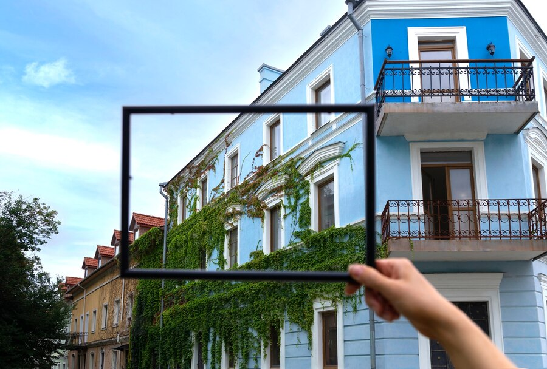

I'M ABDELJABBAR MOUDIRI
Full stack Developper
Full Stack Developer in Training | Passionate about technological innovation and software development best practices 🚀
Full stack Developper
Full Stack Developer in Training | Passionate about technological innovation and software development best practices 🚀
Je m'appelle Abdeljabbar Moudiri, développeur passionné avec un parcours enrichissant dans le domaine de l'informatique. Après l'obtention de mon baccalauréat en 2017, j'ai choisi de me spécialiser en développement logiciel à l'ISTA NTIC de Safi, où j'ai décroché mon diplôme de technicien spécialisé. Durant cette période, j'ai eu l'opportunité d'effectuer un stage d'un mois à la commune d'Ayir, renforçant mes compétences pratiques. En 2024, j'ai intégré le campus YouCode à Safi pour approfondir mes compétences techniques et mes soft skills, avec l'ambition de devenir un développeur complet et innovant. Ma formation continue et mon engagement envers l'apprentissage perpétuel me permettent d'aborder chaque projet avec rigueur et créativité.
HTML

CSS 3

JavaScript

C sharp
Sql Server

Sql Server

Task Flow
TaskFlow est une application de gestion de tâches intuitive qui permet aux utilisateurs de créer, organiser et prioriser facilement leurs tâches. Conçue pour améliorer la productivité, elle offre des fonctionnalités de tri par date et priorité, idéale pour les professionnels et les étudiant
ImoView
ImoView est une plateforme innovante de gestion immobilière qui facilite la recherche, la visualisation et la gestion des biens immobiliers. Avec une interface conviviale, ImoView permet aux utilisateurs de naviguer facilement à travers les annonces, de visualiser des photos et des visites virtuelles, et de gérer les transactions immobilières de manière efficace, que ce soit pour la vente, l'achat ou la location de propriétés
Calculator
Calculator est une application simple et efficace qui permet aux utilisateurs de réaliser des calculs mathématiques de manière rapide et intuitive. Avec une interface épurée, elle offre des fonctions de base telles que l'addition, la soustraction, la multiplication et la division, ainsi que des opérations plus avancées, répondant ainsi aux besoins quotidiens des étudiants, des professionnels et de toute personne ayant besoin d'effectuer des calculs en déplacement.
Gestion du Etudiants
Gestion d'Étudiant est un projet développé en langage C qui permet de gérer les informations académiques des étudiants. L'application offre des fonctionnalités de base pour ajouter, afficher et modifier les données des étudiants, telles que le nom, les notes, et les cours. Grâce à une interface en ligne de commande simple, ce projet aide à organiser et à suivre les performances académiques, facilitant ainsi la gestion des informations des étudiants de manière efficace et intuitive.
"Super développeur! Très professionnel et à l'écoute."
"Le projet a été livré à temps avec une qualité exceptionnelle."
"Créatif et toujours à la recherche de solutions innovantes."